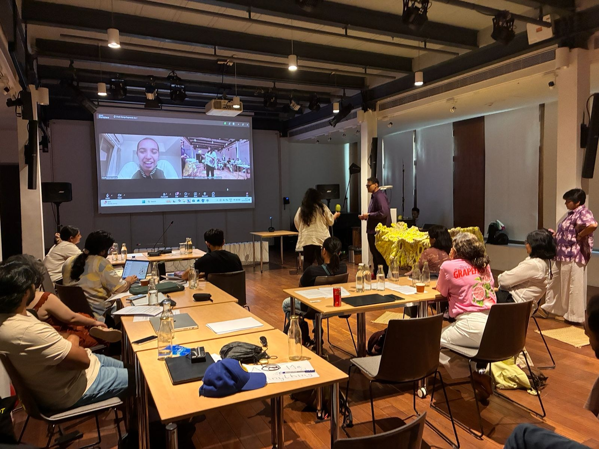

OngoingResidency · Goethe-Institut × MAP, Bengaluru · 2025–26
BreAIk, ChAInge, RegenerAIte
Once Upon A Time (working title): folk tales retold as bedtime stories for a post-AI world.

- FORMAT
- Residency project
- TALES
- Tamil, Tulu, Bengali
- OUTPUT
- NFC-tagged books, an edited folk-tale book, posters
- SHOWN
- Work in progress at Festival of Ideas
What would a grandmother's story warn us about if it were told today, about training data, consent and the labour hidden in algorithms?
The project rewrites Indian folk tales as bedtime-style stories about AI: training data, consent, algorithmic labour, and optimisation versus wisdom. It draws on Sheila Jasanoff's sociotechnical imaginaries, and the retellings of Angela Carter, Terry Pratchett and Karadi Tales.
Tactile printed books carry NFC tags. Tap one to hear the original tale, see its AI parallels, and uncover the hidden terms and conditions. Posters pair old illustrations with speculative ones.
THE PIECES
- 01Tactile booksPrinted books with NFC tags for the original tale, AI parallels and hidden T&Cs.
- 02An edited bookAn existing folk-tale book, annotated and rewritten.
- 03PostersOld and speculative illustrations side by side.
- 04Reading nookA work-in-progress showing at Festival of Ideas.
CREDITS & SUPPORT
Residency by